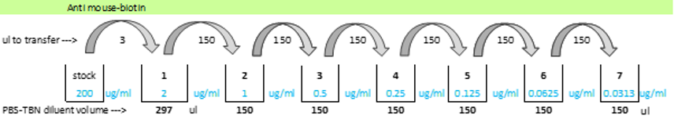

6 QC : Coupling Confirmation
6.1 Overview
This protocol can be used to confirm that antibodies have been correctly conjugated to beads. It works by using anti-species antibodies. Anti mouse-biotin is diluted in a series and reacted with the newly coupled beads which are coupled to mouse and rat antibodies.
6.2 Reagents, consumables & equipment
| Item | Supplier | Catalogue number |
|---|---|---|
| Anti mouse-biotin antibody | Bio-techne | BAF018 |
| Phosphate buffered saline (PBST) | See buffers & reagents section | |
| PBS-TBN | See buffers & reagents section | |
| Streptavidin-R-Phycoerythrin (SA-PE, 1 mg/mL) | Thermo | S806 |
| Antibody-coupled beads | See bead coupling section | |
| Protein low-bind microtubes 1.5 or 2 mL | ||
| Black 96-well plate | Bio-Rad | |
| Pipettes and tips for 1-200 µL | ||
| 0.2 um syringe filters | ||
| Syringe, 50 mL | ||
| Sterile 50 mL tube | ||
| MagPix machine | Luminex |
6.3 Protocol
⌚ Timing: about 3 hours.
- On first use of the anti mouse-biotin, rehydrate it to be 0.2 mg/mL and aliquot into small volumes for freezer storage to minimise freeze-thaw cycles.
- Thaw an aliquot of anti mouse-biotin, 3 µL is required for running two columns on a plate.
- Add 900 µL of PBS-TBN to a tube for diluting the beads.
- Get the newly coupled beads, vortex then sonicate each for 20 s.
- Add 2 µL of each bead to the 0.5 mL. (To give a theoretical 20,000 beads/mL, or 1000 beads/well, assuming 5x106 stock).
- Vortex the diluted beads.
- Label 7 tubes (1-7) for the anti mouse-biotin dilutions, corresponding to concentrations: 2, 1, 0.5, 0.25, 0.125, 0.063, 0.031 µg/mL.
- Serially dilute anti mouse-biotin in PBS-TBN by adding 3 µL of the 0.2 mg/mL stock into 297 µL PBS-TBN and transferring 150 µL of this into 150 µL PBS-TBN sequentially until tube 7, vortex mixing between pipetting

- Dispense 50 µL/well of beads to two columns of a black plate as per plate layout. 10. Add 50 µL/well of the anti mouse-biotin dilutions (1-7) in duplicate, and 50 µL PBS-TBN as the blank, as per plate layout:
| 01 | 02 | 03 | 04 | 05 | 06 | 07 | 08 | 09 | 10 | 11 | 12 | |
|---|---|---|---|---|---|---|---|---|---|---|---|---|
| A | 2.00 µg/mL | 2.00 µg/mL | ||||||||||
| B | 1.00 µg/mL | 1.00 µg/mL | ||||||||||
| C | 0.50 µg/mL | 0.50 µg/mL | ||||||||||
| D | 0.25 µg/mL | 0.25 µg/mL | ||||||||||
| E | 0.125 µg/mL | 0.125 µg/mL | ||||||||||
| F | 0.063 µg/mL | 0.063 µg/mL | ||||||||||
| G | 0.031 µg/mL | 0.031 µg/mL | ||||||||||
| H | 0.00 µg/mL | 0.00 µg/mL |
- Cover and incubate on shaker for 45 mins at ambient temperature.
- During the incubation, dilute SA-PE to 3 µg/mL by adding 2.7 µL of SA-PE to 900 µL PBS-TBN. Store this in the fridge until use.
- Put plate on magnet, wait 60 s, wash plate 3 times with 100 µL/well PBST, removing from the magnet when adding wash buffer.
- Add 50 µL/well of diluted SA-PE to the plate.
- Cover & incubate on shaker for 45 mins.
- Wash plate 3 times as before with 100 µL/well PBST.
- Add 100 µL PBS-TBN to each well and read on MagPix the same day using the 12-plex protocol.
- Check bead counts and adjust bead volume on subsequent uses to get 100-150 beads per region per well.